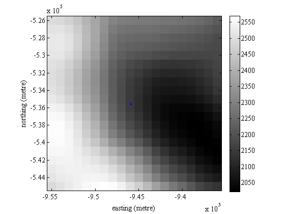

geotiffinterp
This function interpolates values of a georeferenced tiff file, given lat/lon coordinates or map x/y locations corresponding to the map projection associated with the tiff file. This function is fast because even if the GeoTIFF file is quite large, only a region of the image large enough to perform interpolation is loaded. This function was designed to easily probe GeoTIFF datasets such as digital elevation maps (DEMs) or other geospatial data arrays. It can be used to interpolate values from a georeferenced satellite image, but if you're working with images, other functions such as geotiffreadregion may be more useful.
Contents
Syntax
Ai = geotiffinterp(filename,lati,loni) Ai = geotiffinterp(filename,xi,yi) Ai = geotiffinterp(...,InterpolationMethod) Ai = geotiffinterp(...,'nanval',NanValue) Ai = geotiffinterp(...,'frame',FrameNumber) Ai = geotiffinterp(...,'show')
Description
Ai = geotiffinterp(filename,lati,loni) returns interpolated values of a tiff image at georeferenced locations given by lati and loni.
Ai = geotiffinterp(filename,xi,yi) returns interpolated values a tiff image where xi and yi are units of distance (usually feet or meters) in projected map coordinates described by the projection metadata in the tiff file. The way xi and yi are interpreted: if no value in xi has an absolute value exceeding 90 and no value in yi has an absolute value exceeding 360, then geographic coordinates of degrees are assumed. Otherwise, the first two inputs after filename are assumed to be map x/y coordinates.
Ai = geotiffinterp(...,InterpolationMethod) specifies an interpolation method as 'nearest', 'linear', 'spline', or 'cubic'. Default interpolation method is linear.
Ai = geotiffinterp(...,'nanval',NanValue) sets a specified value in the tiff to NaN before interpolation. In GeoTIFF format, undefined values are often set to 32767 because the tiff format only stores integers. By default, geotiffinterp sets replaces all values of 32767 to NaN before interpolation. To prevent geotiffinterp from doing this, declare 'nanval',NaN. To replace some other value, say 9999, to NaN before interpolation, use 'nanval',9999.
Ai = geotiffinterp(...,'frame',FrameNumber) specifies a frame number to interpolate, if the GeoTIFF contains multiple frames. Currently, FrameNumber can only have a single scalar value, so you'll have to loop geotiffinterp to probe multiple frames. If the tiff file contains multiple frames and you do not specify which one you're interested in, geotiffinterp will only interpolate the first frame. As this applies to georeferenced image tiffs with three slices corresponding to red, green, and blue, if you want all three colors you will have to run geotiffinterp once for each color.
Ai = geotiffinterp(...,'show') plots the subsection of the tiff that is loaded by geotiffinterp in grayscale and overlays markers showing interpolation locations.
A data set for some examples
Matlab does not come with any built-in DEM example files in GeoTIFF format, so the following example will use elevation data from the Bedmap2 Antarctic elevation dataset. To follow along with this example, you can unzip the linked file into your current folder. For other geospatial data sets in GeoTIFF format, try looking here.
Ice thickness at a single point
The first ice core to successfully penetrate the Antarctic ice sheet was at Byrd camp in 1968. The ice core was 2164 meters long and was drilled at (80.02S, 119.52W). How closely does the Bedmap2 DEM match this thickness?
geotiffinterp('bedmap2_thickness.tif',-80.02,-119.52)
ans = 2.1478e+03
That's by the default linear interpolation. For an elevation data set, cubic interpolation usually makes more sense:
geotiffinterp('bedmap2_thickness.tif',-80.02,-119.52,'cubic')
ans = 2.1464e+03
That's still not exact, but we can't expect to extract the exact value from a one-kilometer gridded data set. For a sense of context, show the data point on a map:
geotiffinterp('bedmap2_thickness.tif',-80.02,-119.52,'cubic','show');
Notice that geotiffinterp loads ten extra pixels on each side of the data of interest. This to support fancy interpolation methods.
Using a coordinate conversion tool from the Antarctic Mapping Tools package, we can get the "easting" and "northing" coordinates of the Byrd ice core in a polar stereographic projection using a true scale at 71 degrees S:
[x,y] = ll2ps(-80.02,-119.52)
x = -9.4588e+05 y = -5.3559e+05
The Bedmap2 DEM is in polar sterographic coordinates (re 71 S), so just as we entered geographic degrees above, we can enter the map x/y values:
geotiffinterp('bedmap2_thickness.tif',x,y,'cubic')
ans = 2.1464e+03
Regridding a data set
In addition to interpolating values at a single point, geotiffinterp can also interpolate to a line, transect, or grid of points. Consider Mount Vinson, which is located at (78.53 S, 85.62 W). Suppose you want to regrid or supersample the Bedmap2 data set from 1 km resolution to 500 m resolution, and create a map of the area surrounding Mount Vinson. To do this, we can make a grid of points at 500 m spacing, 300 km wide, centered on Mount Vinson:
For this map, it makes sense to talk in meters instead of lat/lons, so we'll transform to polar stereographic coordinates via the ll2ps function found in the Antarctic Mapping Tools package.
[centerx,centery] = ll2ps(-78.53,-85.62)
centerx = -1.2466e+06 centery = 9.5483e+04
And we can create a 500 m resolution grid for about a 150 km radius surrounding Mount Vinson:
halfwidth = 150000; resolution = 500; x = centerx-halfwidth:resolution:centerx+halfwidth; y = (centery+halfwidth:-resolution:centery-halfwidth)';
Note that above, the y variable was transposed into a column vector. If x and y are both column vectors or both row vectors, geotiffinterp will interpolate only at x(1),y(1), x(2),y(2),..., x(N),y(N), etc., whereas elevations if x and y are a row and column vector, respectively, elevations are returned at every combination of x and y values. In turn,
bed = geotiffinterp('bedmap2_bed.tif',x,y,'cubic'); sfz = geotiffinterp('bedmap2_surface.tif',x,y,'cubic');
returns the same gridded dataset as
[xgrid,ygrid] = meshgrid(x,y); bed = geotiffinterp('bedmap2_bed.tif',xgrid,ygrid,'cubic'); sfz = geotiffinterp('bedmap2_surface.tif',xgrid,ygrid,'cubic');
Now we have elevation data, and all we have to do is plot them. Below I'm using the rgb function to get the RGB values of ice blue, which turn out to be [.8431 1 .9961].
figure('pos',[100 100 800 550]) surface(x,y,bed); % draws bed demcmap(bed,256) % sets colormap view([-123 26]) % sets viewing angle hold on % allows overlaying data % Draw ice surface: hsfz = surface(xgrid,ygrid,sfz); % Draw sides of bedrock: minbed = min(bed(:))*ones(601,1); hrock(1) = surface([xgrid(:,1) xgrid(:,1)],[ygrid(:,1) ygrid(:,1)],[bed(:,1) minbed]); hrock(2) = surface([xgrid(1,:);xgrid(1,:)],[ygrid(1,:);ygrid(1,:)],[bed(1,:);minbed']); hrock(3) = surface([xgrid(:,end) xgrid(:,end)],[ygrid(:,end) ygrid(:,end)],[bed(:,end) minbed]); hrock(4) = surface([xgrid(end,:);xgrid(end,:)],[ygrid(end,:);ygrid(end,:)],[bed(end,:);minbed']); % Draw sides of ice: hsfz(2) = surface([xgrid(:,1) xgrid(:,1)],[ygrid(:,1) ygrid(:,1)],[bed(:,1) sfz(:,1)]); hsfz(3) = surface([xgrid(1,:);xgrid(1,:)],[ygrid(1,:);ygrid(1,:)],[bed(1,:);sfz(1,:)]); hsfz(4) = surface([xgrid(:,end) xgrid(:,end)],[ygrid(:,end) ygrid(:,end)],[bed(:,end) sfz(:,end)]); hsfz(5) = surface([xgrid(end,:);xgrid(end,:)],[ygrid(end,:);ygrid(end,:)],[bed(end,:);sfz(end,:)]); % Tinker with formatting: lighting phong camlight shading interp % eliminates lines from surface grids xlabel('eastings (m)') ylabel('northings (m)') zlabel('elevation (m)') axis tight set(hrock,'facecolor',rgb('dark gray')) set(hsfz,'facecolor',rgb('ice blue'),'facealpha',.6)
Author Info
This function was written by Chad A. Greene of the University of Texas Institute for Geophysics (UTIG) in September of 2014. This function was inspired by and borrows some code from Aslak Grinsted's geotiffreadregion function.